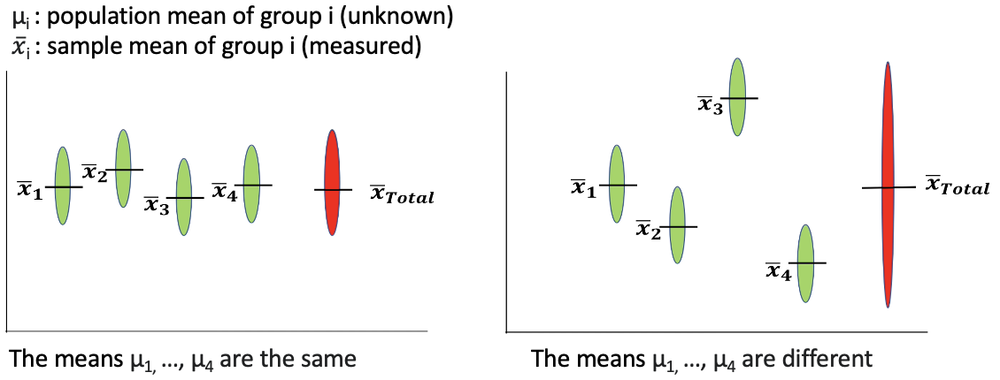

One-way ANOVA
ANOVA (ANalysis Of VAriance) helps us determine whether the means of multiple groups are different. Instead of comparing means directly (as in t-tests), ANOVA compares the variances to infer differences in means.
We assume that the variance within each group is the same across all groups.

(Figure credit: Lorette Noiret)
- \(H_0: \mu_1 = \mu_2 = ... = \mu_n\)
- \(H_1\): there is at least one group which has an average different than other groups.
Which is equals to test:
- \(H_0: \sigma^2_{\text{inter group}} = \sigma^2_{\text{intra group}}\)
- \(H_1: \sigma^2_{\text{inter group}} > \sigma^2_{\text{intra group}}\)
If the means are truly different, the variation between groups (\(\sigma^2_{\text{inter group}}\)) should be greater than the variation within groups (\(\sigma^2_{\text{intra group}}\)).
ANOVA calculates the F statistic, which is a ratio:
\(F = \frac{\sigma^2_{\text{inter group}}}{\sigma^2_{\text{intra group}}}\)
, and the probability of obtaining an F-statistic as extreme as the observed one (the p-value), assuming the null hypothesis is true.
Conditions of applying ANOVA:
- Independence: Observations in each group must be independent.
- Normality: Data should be approximately normally distributed (can be checked using the Shapiro test).
- Homogeneity of Variance: Variances across groups should be roughly equal (Levene’s test or Bartlett’s test can check this).
In R, the function aov() is used to perform ANOVA.